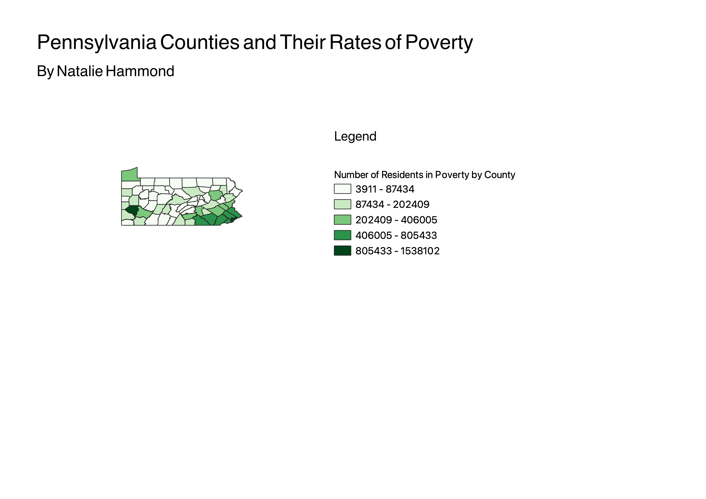

Homework 6: Census data choropleth
Natalie Hammond
My map represents the state of Pennsylvania and its 67 counties. I chose to focus my map on poverty rate; specifically, the population of poverty for each county. The darker green portions of the chloropleth show areas that are more impoverished. The number of impoverished by county varies from a few thousand to over a million residents.

Data used for this project
CSV dataset
Link to shapefile